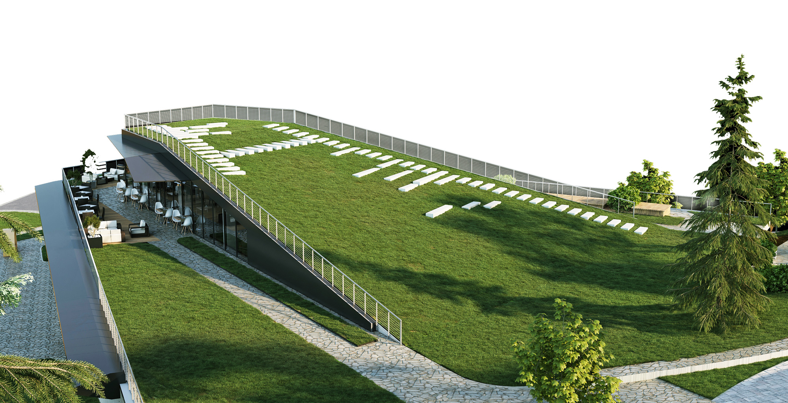

Tbilisi Hills
Residential complex
Main
The project is designed for the prestigious Tbilisi Hills community. The architectural ensemble consists of three residential buildings and a commercial structure. The architecture presented here represents an innovative approach to building design, combining modern technologies with unique aesthetics. The core principles of this architecture are functionality, aesthetics, and sustainability. Each element of the buildings is developed considering its interaction with the environment and the needs of the users
The volume of the residential buildings is divided into two blocks, positioned at different heights due to the terrain relief. These blocks are connected by a glass atrium, serving as a communal space for the building residents. The atrium bridges are made of the same material as the facades, emphasizing the seamless transition between the volumes
Two large walls on either side of the atrium add dynamism, accentuating the angle between the two blocks and concealing necessary engineering communications. The pattern of moving shadow blinds on the facades pays homage to traditional Georgian ornaments, adding cultural context to the project
The ensemble is completed by a commercial building, meticulously integrated into the natural topography. The building’s volume is divided into three terraces. The first terrace serves as access to the main structure for visitors and service vehicles, accommodating commercial spaces and a restaurant at this level
On the second level, there is a fully glazed café surrounded by panoramic views and an outdoor terrace. The glazing of the second level is designed to allow natural light to seamlessly penetrate into the main volume of the first level. The third inclined terrace functions as an accessible roof deck, providing space for park furniture, relaxation, and sunbathing
